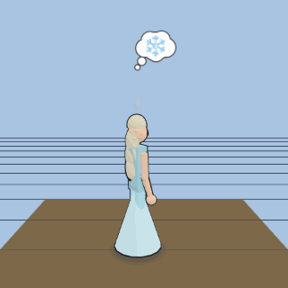
Ice Queen (ice-blue gown)
disney-princess/ice-queenDisney Princess · humanoid · franchise
Avatar rigs, grouped by pack. Idle rig with a 360° camera orbit; personality bubble shown.

disney-princess/ice-queen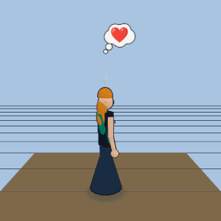
disney-princess/her-sister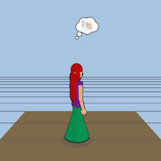
disney-princess/the-mermaid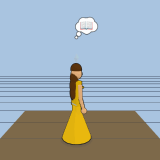
disney-princess/beauty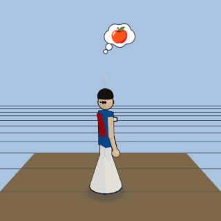
disney-princess/the-first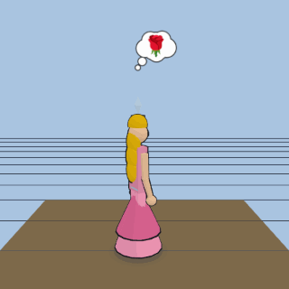
disney-princess/sleeping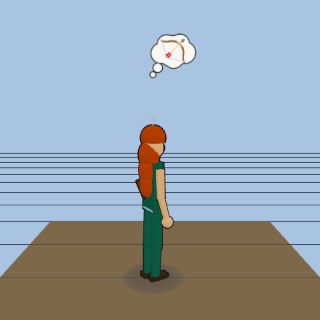
disney-princess/the-archer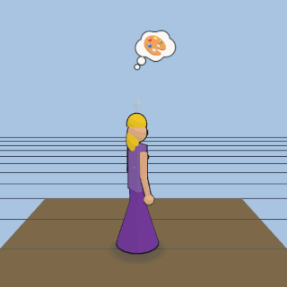
disney-princess/the-tower-girl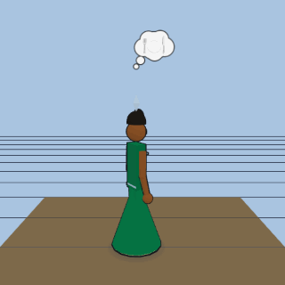
disney-princess/the-frog-princess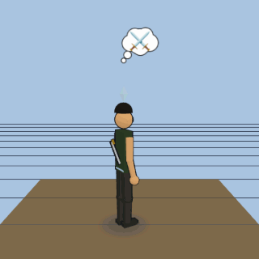
disney-princess/the-warrior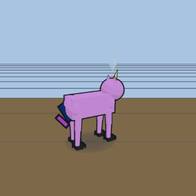
my-little-pony/purple-unicorn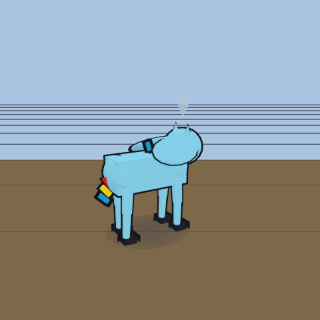
my-little-pony/rainbow-pegasus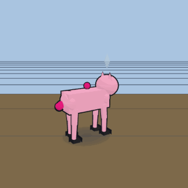
my-little-pony/party-pony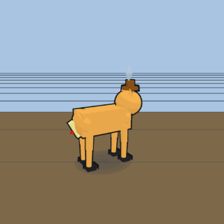
my-little-pony/apple-farmer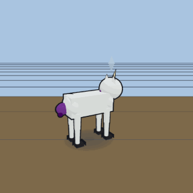
my-little-pony/fashion-unicorn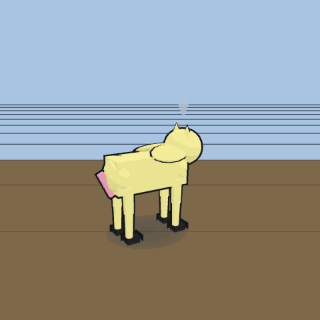
my-little-pony/shy-pegasus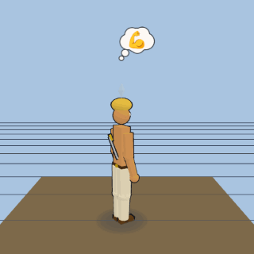
he-man/he-man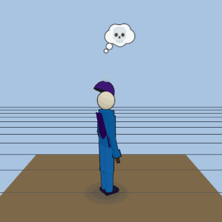
he-man/skeletor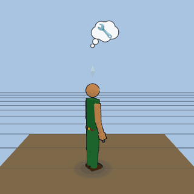
he-man/man-at-arms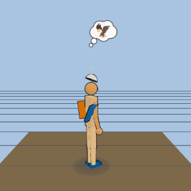
he-man/sorceress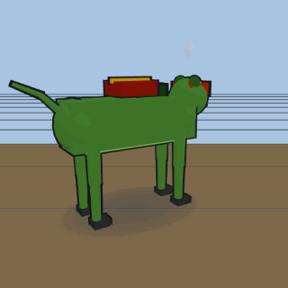
he-man/battle-cat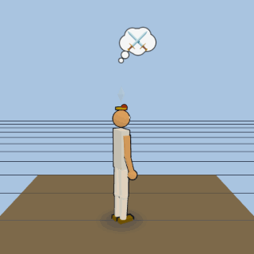
he-man/teela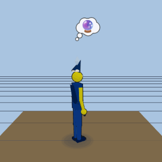
he-man/evil-lyn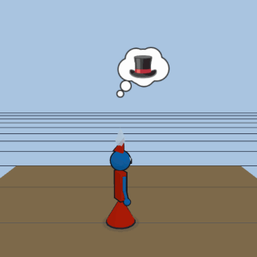
he-man/orko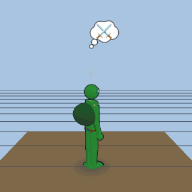
tmnt/leo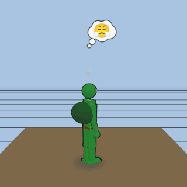
tmnt/raph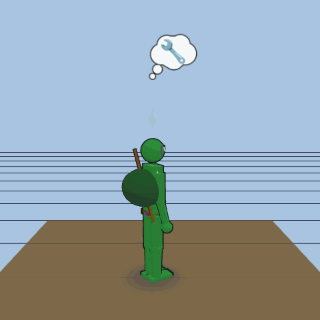
tmnt/donnie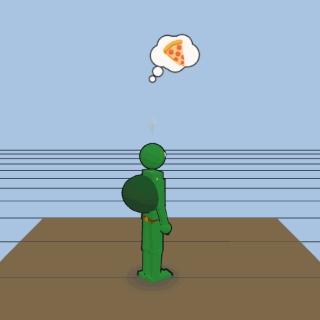
tmnt/mikey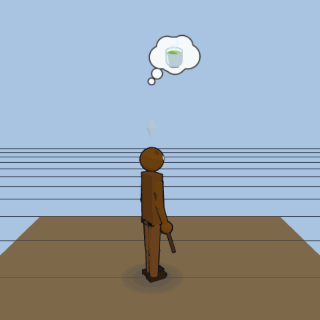
tmnt/sensei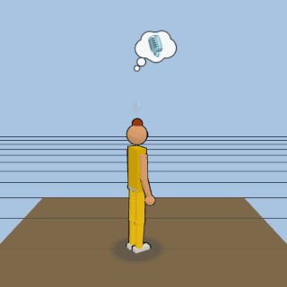
tmnt/reporter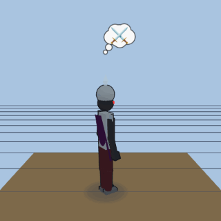
tmnt/villain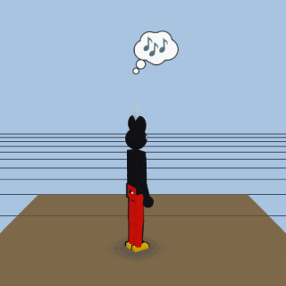
disney-animals/founding-mouse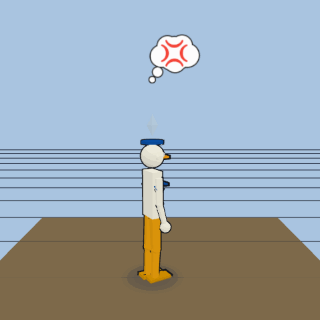
disney-animals/sailor-duck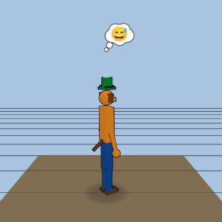
disney-animals/tall-dog-pal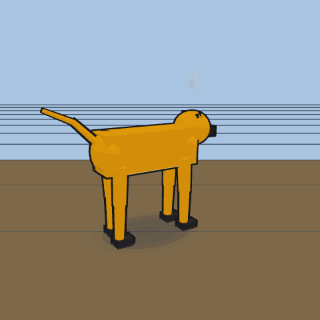
disney-animals/yellow-pup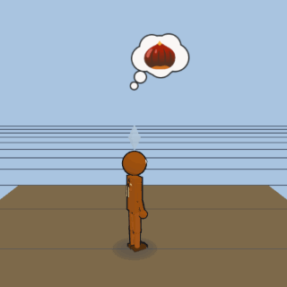
disney-animals/chipmunk-smooth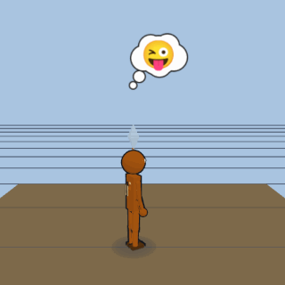
disney-animals/chipmunk-tufted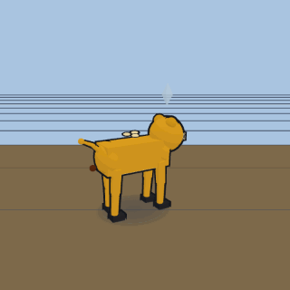
disney-animals/lion-cub-prince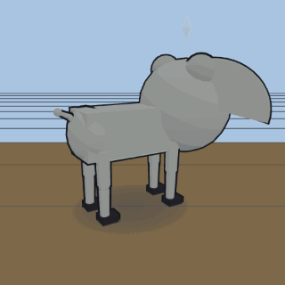
disney-animals/flying-elephant-calf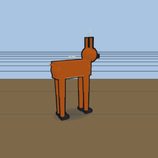
disney-animals/spotted-fawn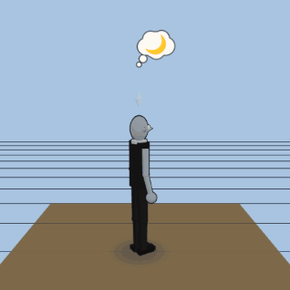
despicable-me/boss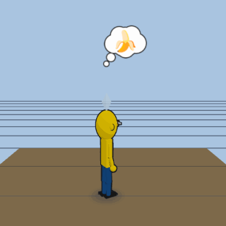
despicable-me/henchman_tall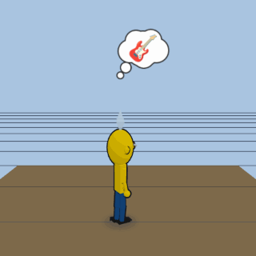
despicable-me/henchman_wild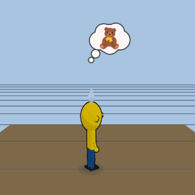
despicable-me/henchman_small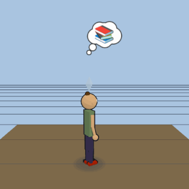
despicable-me/sister_oldest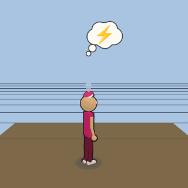
despicable-me/sister_middle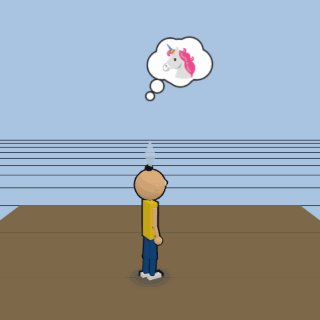
despicable-me/sister_youngest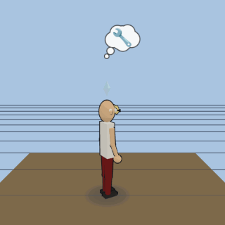
despicable-me/inventor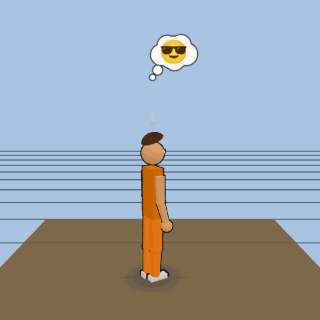
despicable-me/villain_gadget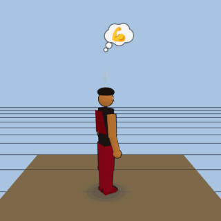
despicable-me/villain_machoshrek/shrekshrek/donkeyshrek/fionashrek/pussshrek/farquaadshrek/dragonshrek/gingytoy-story/woodytoy-story/buzztoy-story/jessietoy-story/potatotoy-story/rextoy-story/hammtoy-story/bullseyetoy-story/slinkysesame-street/big-birdsesame-street/elmosesame-street/cookie-monstersesame-street/bertsesame-street/erniesesame-street/oscar-grouchsesame-street/groversesame-street/count-von-countsesame-street/rositasesame-street/snuffleupagussesame-street/zoe